Host your meeting, record it, get better.
One Mac app for the whole loop: start the Zoom meeting, put your screen and camera in one picture, then learn from the recording.
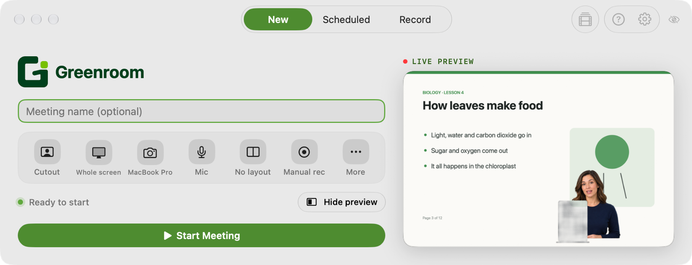
Start it.
Sign in with Zoom once. No developer apps to set up. End confirms in one click.
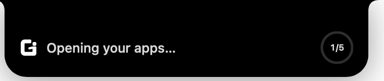
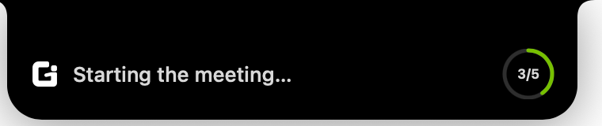
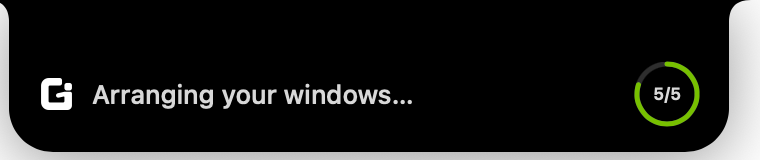
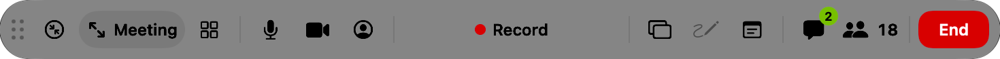
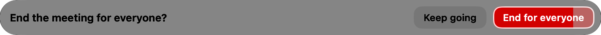
The island counts the steps while Greenroom opens the meeting.Step 3 of 5.Step 5 of 5.Live. The meeting is running.Your control bar stays out of the way.End asks once, for everyone, then it is done.
Look right.
Your screen and camera become one picture. Pick the shape of you.
- A draggable bubble. Cutout and presenter put you in front of the slide.
- Switch to the camera you face. The picture follows.
- No OBS, no virtual camera.
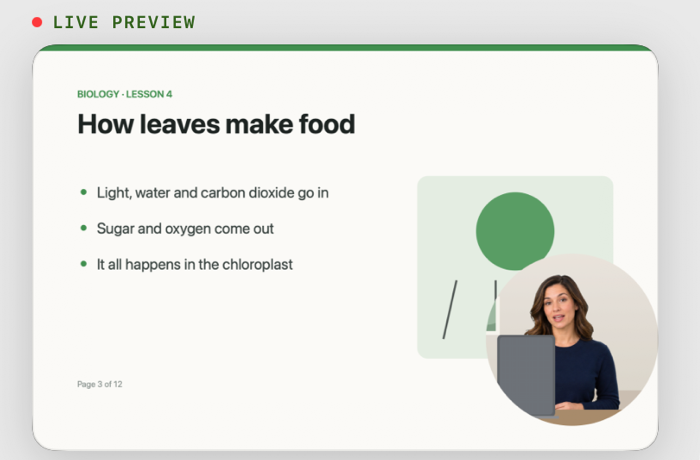
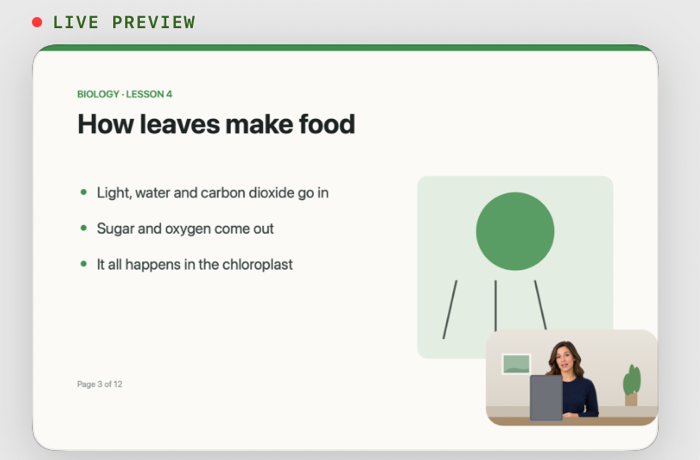
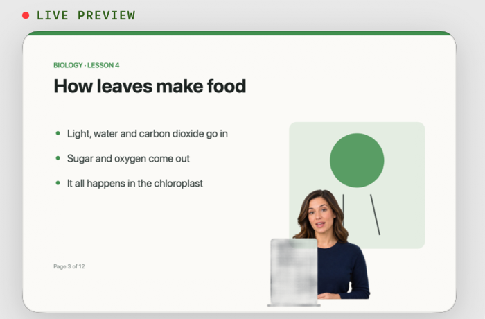
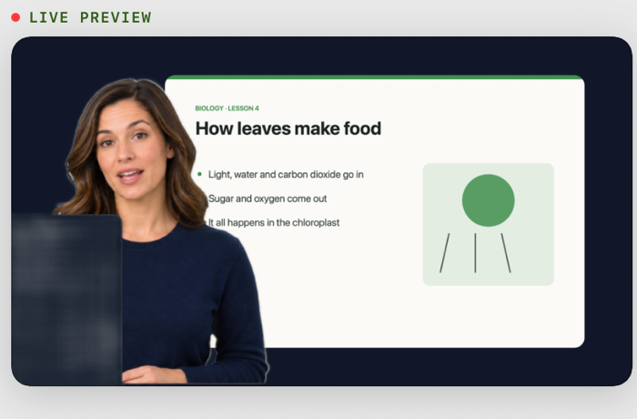
Run it.
Everything you need mid-meeting, in a bar that stays out of the picture.
Its own meeting window
Chat and people live beside your slides.
Nine views
Change what everyone sees in a click.
Draw on screen
Point at what matters, then wipe it clean.
Pause
Stop the recording without ending the meeting.
Clips
Mark a moment while it is happening.
Then get better.
Every meeting lands in Sessions. Watch it, trim it, share it.
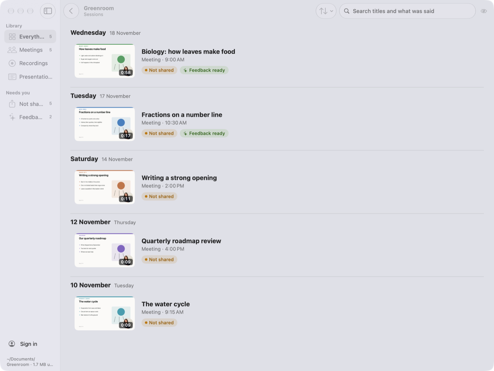
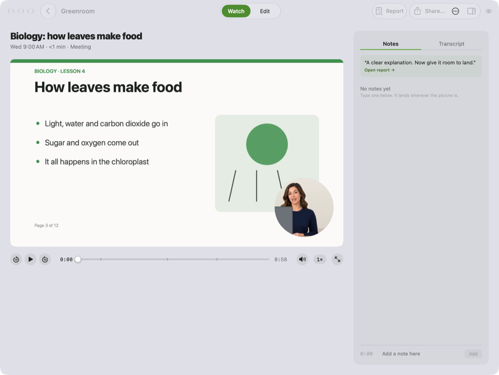
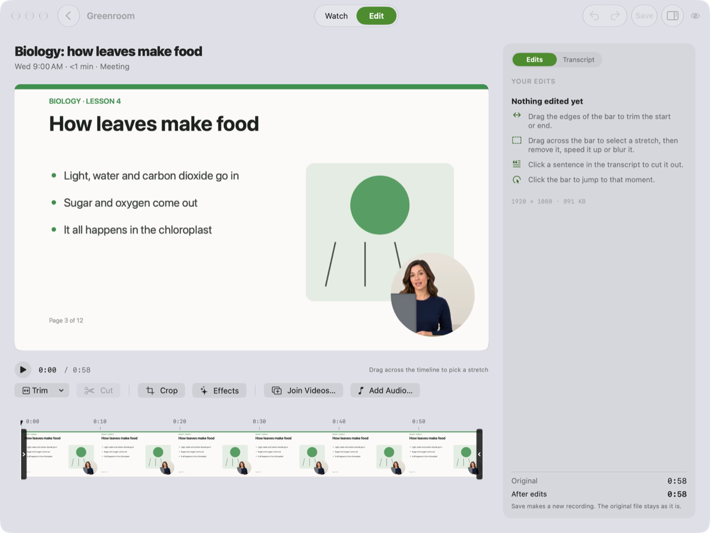
Sessions: every recording, searchable by what was said.Watch: replay it with the transcript beside it.Editor: cut it down on a filmstrip.
Get feedback.
Counted on your Mac: facing the room, pacing, filler words. An agent can add written notes. It is optional and off by default.
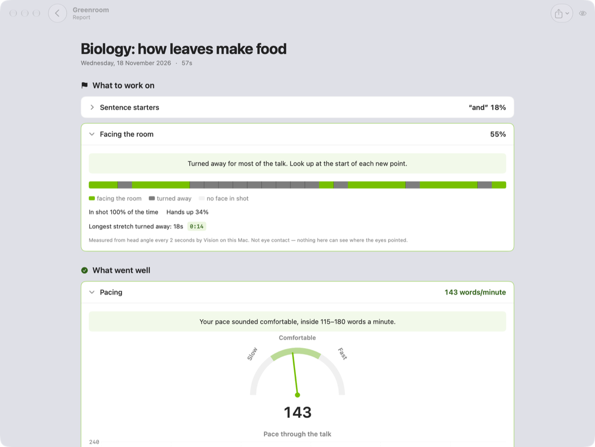
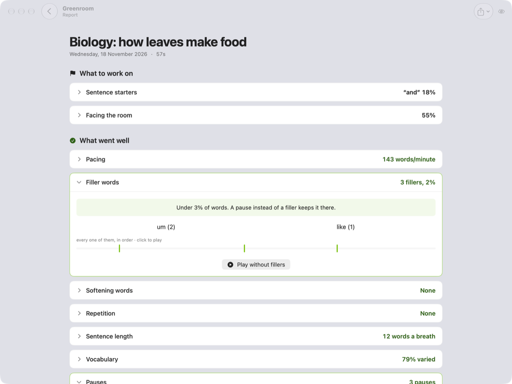
Private by design.
Recordings and feedback stay on your Mac. A short list of things can leave it.
Stays on your Mac
- Recordings and transcripts.
- Feedback numbers, counted on your Mac.
- Your camera and screen, composed locally.
Leaves it
- Zoom, for the meeting itself.
- The update check.
- The Report button, when you press it.
- Anonymous analytics.
ONLY IF YOU TURN IT ON
- YouTube upload.
- Cues lookups.
- Your own agent.
Cues BetamacOS 26
Find the moment you said it.YouTube
Upload a session when you choose to.Scheduled host-only
Start your scheduled meetings from Greenroom.Transfer
Move your sessions to another Mac.Host it. Record it. Get better.
Free and open source.
- macOS 14 or later. Cues, summaries and on-Mac written feedback need macOS 26.
- Greenroom is not notarized yet. The first time, open it with Open Anyway in System Settings, Privacy & Security.